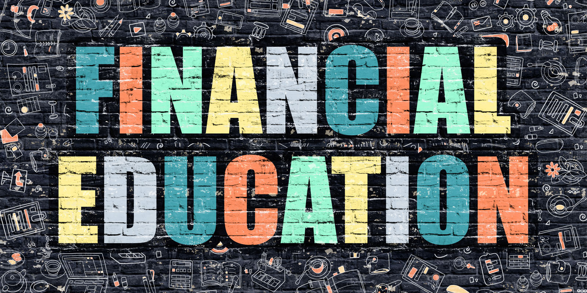

Financial Literacy
- How to Teach Financial Literacy: 15 Steps (with Pictures)
Financial literacy is the ability to understand and effectively use various financial skills, including personal financial management, budgeting, and investing. The lack of these skills is called ... - S&P Global FinLit Survey | Global Financial Literacy ...
Financial literacy foundation #2 - Cash flow versus capital gains. Most people invest for capital gains. The rich invest for cash flow. Simply put, investing for capital gains is like gambling. You invest your money and hope the price goes up. For instance, many people buy a house hoping they’ll be able to sell it for more money later. - Financial Literacy Definition - investopedia.com
About Financial Literacy 101. Financial Literacy 101 is a service of Decision Partners. Since 2004, we've helped students succeed through personalized financial education. We work in partnership with colleges, universities, and other student-serving organizations. - Financial Literacy for Kids: Lesson Plans for Elementary ...
financial literacy from a pool of 26 financial literacy items used in prior research. With Studies 2 and 3, we also sought to replicate findings that financial literacy predicted financial ... - What Is Financial Literacy: Importance, History, Details ...
Financial Literacy 1. FINANCIAL LITERACY Anne A. Alban Family Welfare Officer Albanne_10 2. REALITY CHECK 3. ANG PERA, PARATING PA LANG… PAALIS NA! 4. NABUBUHAY A-KINSE,A- TRIENTA 5. RASON:“Culprit” Instant Gratification 6. - 21 Must-Know Financial Literacy Statistics | Balancing ...
Financial Literacy for Pre-school, Pre-K, Kindergarten, First and Second Grade. The following lessons provide guidance, lesson plans and activities for teachers interested in introducing four to seven year old children (pre-school, pre-k, first and second grade) to early financial literacy concepts. - (PDF) Financial Literacy, Financial Education, and ...
Financial literacy is the possession of skills that allows people to make smart decisions with their money. And don’t be misled by the word literacy. Although understanding stats and facts about money is great, ... - Financial Literacy - SlideShare
Financial literacy is a missing component in our school systems. As a result, Americans have not prepared for basic expenses. The widespread lack of a financial education is concerning. - Financial Literacy Books | Top 10 Best Financial LIteracy ...
The Standard & Poor's Ratings Services Global Financial Literacy Survey is the world’s largest, most comprehensive global measurement of financial literacy. It probes knowledge of four basic financial concepts: risk diversification, inflation, numeracy, and interest compounding. The survey is based on interviews with more than 150,000 adults in over 140 countries - (PDF) FINANCIAL LITERACY: FROM THEORY TO PRACTICE
“Financial literacy is a combination of financial knowledge, skills, attitudes and behaviors necessary to make sound financial decisions, based on personal circumstances, to improve financial wellbeing” (Australian Securities and Investments Commission).

Slideshare uses cookies to improve functionality and performance, and to provide you with relevant advertising. If you continue browsing the site, you agree to the use of cookies on this website. See our User Agreement and Privacy Policy .
Slideshare uses cookies to improve functionality and performance, and to provide you with relevant advertising. If you continue browsing the site, you agree to the use of cookies on this website. See our Privacy Policy and User Agreement for details.
SlideShare Explore Search You Upload Login Signup Home Explore Successfully reported this slideshow. We use your LinkedIn profile and activity data to personalize ads and to show you more relevant ads. You can change your ad preferences anytime. Financial Literacy Upcoming SlideShare Loading in … 5 × 1 1 of 66 Like this presentation? Why not share! Share Email Leadership&Financial Literacy20112 by LauricellaandAsso... 1970 views Financial literacy my edit 012710 by AllanArrow 10079 views Dell case study by Kanukuntla Ranjith 23010 views Chapter 01 concepts and principle... by iipmff2 86080 views Life Insurance by guest5f7f96 42979 views Insurance by Anit Datta 89343 views Share SlideShare Facebook Twitter LinkedIn Embed Size (px) Start on Show related SlideShares at end WordPress Shortcode LinkFinancial Literacy
30,216 viewsShare Like Download ...
Bannex company
FollowPublished on Aug 24, 2012
Financial literacy intended for Overseas Filipino Workers
... Published in: Economy & Finance , Business 51 Comments 110 Likes Statistics Notes Full Name Comment goes here. 12 hours ago Delete Reply Block Are you sure you want to Yes No Your message goes hereLogin to see the comments
JaysonAlcozer1 1 week ago EmelynDasig 2 weeks ago EmelynDasig 2 weeks ago EmelynDasig 2 weeks ago EmelynDasig 2 weeks ago Show More No Downloads Views Total views 30,216 On SlideShare 0 From Embeds 0 Number of Embeds 25 Actions Shares 0 Downloads 2,798 Comments 51 Likes 110 No notes for slideFinancial Literacy
1. FINANCIAL LITERACY Anne A. Alban Family Welfare Officer Albanne_10 2. REALITY CHECK 3. ANG PERA, PARATING PA LANG… PAALIS NA! 4. NABUBUHAY A-KINSE,A- TRIENTA 5. RASON:“Culprit” Instant Gratification 6. PERSONAL FINANCE & FINANCIAL LITERACY Is nothing but knowing How to keep whatYOU earn and do More with what you Keep FINANCIAL LITERACYis understanding how you can build your personal wealth 7. What is Financial Independence?What do you mean by “financially literate?”What is Wealth?Kailan ba maituturing na “mayaman”na ang isang tao? 8. Where does yourMoney come from? 9. CASHFLOW QUADRANT(Four ways that money may come your way) Work for somebody else Go into business Work for yourself Make your money work for you RAT RACE ROBERT KIYOSAKI Author, “Rich Dad, Poor Dad” 10. CASHFLOW QUADRANT(Four ways that money may come your way) Work for somebody else Go into business Work for yourself Make your money work for you FAST TRACK 11. CASHFLOW QUADRANT(Four ways that money may come your way) Work for somebody else Go into business Work for yourself Make your money work for you ROBERT KIYOSAKI Author, “Rich Dad, Poor Dad” 12. CASHFLOW QUADRANT(Four ways that money may come your way) Work for somebody else Go into business Work for yourself Make your money work for you ROBERT KIYOSAKI Author, “Rich Dad, Poor Dad” 13. CASHFLOW QUADRANT(Four ways that money may come your way) Work for somebody else Go into business Work for yourself Make your money work for you ROBERT KIYOSAKI Author, “Rich Dad, Poor Dad” 14. CASHFLOW QUADRANT(Four ways that money may come your way) Work for somebody else Go into business Work for yourself Make your money work for you ROBERT KIYOSAKI Author, “Rich Dad, Poor Dad” 15. Where does your Money go?Accountspayable/ INCOME Others SavingsSupport forParents, Re Insurancelatives Premiums Your Children’s Household Education Expenses 16. FACING THE REALITIES 17. Where are you now? Prepare your Personal Financial Statements or Statement of Assets & Liabilities (SAL) 18. Personal Income/ExpensesStatement Salary Interest Income from Savings and Time deposits Income from Investments in Government Securities & stocks Income from Other Assets Less: Expenses Food Rent Monthly Amortization for housing, car & other loans Utilities Insurance Premiums Allowance of children tuition fees Other expenses Net Income Less: Personal Income Tax Net Income after tax 19. FINANCIAL PLANNING The benefits of having a sound financial plan: • It can help you avoid mistakes/ sidetracks • Helps you make smarter decisions • Can insulate you from the turbulence in the economy • Makes money work for you! 20. INCOME EXPENDITURES CAN BECLASSIFIED AS FOLLOWS : Consumption Protection Savings Taxes 21. Statement of Assets & Liabilities ASSETS Cash (Cash on hand, bank deposits,Coop deposits, etc) Properties that you own (House, land, car, jewelry, etc) Receivables (mga pautang) Investments (T-bills, T-bonds, shares of stock, Coop Capital, etc.) Insurance & pension and academic plans. LIABILITIES Loans you owe your relatives & friends Housing loan car loan credit card debt all payables & other loansTotal Assets – Total Liabilities = Net Worth 22. The CASHFLOW GAME INCOME EXPENSES ASSETS LIABILITIES 23. CASHFLOW 1Job orProfession INCOME EXPENSES ASSETS LIABILITIES - Larry Gamboa Think Rich, Pinoy! 24. CASHFLOW 2Job orProfession INCOME EXPENSES ASSETS LIABILITIES - Larry Gamboa Think Rich, Pinoy! 25. CASHFLOW of the RICHJob orProfession INCOME EXPENSES ASSETS LIABILITIES - Larry Gamboa Think Rich, Pinoy! 26. FINANCIAL LIFE PHASE 4 Retirement 3 Fine tuning 2 Build-up Where are you now? 1 Where do you want to be in the future?Start-up 27. KALAYAAN SAKAKAPUSAN (KsK) RULES 28. SIMPLE RULES IN FINANCIALFREEDOM Rule 1: Pay yourself first. „YOU” is your first source of Capital SAVINGS 29. SAVE!!! 30. Redefining Savings It must be defined as an EXPENSE. It is an expense that BUYS your FUTURE. 31. SAVINGSSaving is a consciousand deliberate way ofsetting aside a portion ofthe personal income. 32. EQUATION Y- Income _ S - Savings ______________________ C – Consumption 33. EQUATION Y- Income_ C – Consumption ______________________= S - Savings 34. KsK Rule #2 Define your Financial Target @ each Life phase 35. RULES IN SETTING GOALS Set State itPut it specific in Monitor into timetable positive progresswriting for each terms goal 36. OBSTACLES TO SAVINGS Procrastination - delaying savings or putting savings off for another time; Poor Spending Habits – includes spending on unnecessary items; Impulse buying; hedonistic lifestyle 37. OBSTACLES TO SAVINGSCulture of Dependency -- Beingoverly dependent on othersLack of Financial Literacy –spending on liabilities or itemsthat decrease in value overtime; not knowing how yourmoney will grow or work foryou. Culture of Dependency 38. Stop spending on things thatdiminish in valueKnow the difference between Assets & LiabilitiesPoor Spending Habits –*Impulse buying•Uso kasi•Too muchentertainment 39. Know the difference Your Your NEEDS WANTS 40. Protect your greatest IncomeGenerating Asset, Yourself ALERT #1 Health is WealthHealth and Protection are very muchinterrelated. If you are not healthy and you donot take care of yourself, you can get sick, meetan accident, get disabled, or die. 41. GOD HELPS ONLY THOSEWHO HELP THEMSELVES 42. GROW WITH THEECONOMY AND BEATINFLATION 43. An Illustrative Formula of 80/20 43 44. Trust the Power of Time and Compounding Period 1 Period 2 Period 3 Your Money Your + Money Interest Earning Your Your MoneyMoney + Interest Your Your Earning Interest Interest Earning Earning + Interest Earning 45. Power of Compounding Simple Interest CompoundYear Principal Total Principal interest TotalEnd of 1 yr 1000 100 1100 1000 100 1100End of 2 yr 1000 100 1200 1100 110 1210End of 3 yr 1000 100 1300 1210 121 1331End of 4yr 1000 100 1400 1331 133 1464End of 5 yr 1000 100 1500 1464 146 1611End of 6yr 1000 100 1600 1611 161 1772End of 7yr 1000 100 1700 1772 177 1949End of 8 yr 1000 100 1800 1949 195 2144End of 9 yr 1000 100 1900 2144 214 2358End of 10 yr 1000 100 2000 2358 236 2594 Difference 594 46. Rule of 72(DOUBLE YOUR MONEY) For example, you are being invited to invest in a financial transaction that offers a 20% return per year. Simply divide 72 by the rate of return, or 20%, and you will get the number of years it would take to DOUBLE your money. That is, if you do not withdraw the earnings. 72 No. of years = = 3.6 years 20 % 47. INVESTING & INFLATION INFLATION ◦ Is the economic condition of sustained price increases. Money is an asset that continuesly losses its value. 48. Rule of 72 (DOUBLE YOUR MONEY)On the other hand, if you want to DOUBLE your money inthree (3) years, at what rate of return should you invest yourmoney?Simply divide 72 by the number of years within which youwould want to double your money, or 3 years, and you will getthe required rate of return to DOUBLE your money within thespecified period. That is, if you do not withdraw the earnings. 72 No. of years = = 24 % 3 yrs. 49. ASSESS RISK & OPTION Note: The higher the risk, the higher the return. Always investigate 1st before believing UNDERSTANDING LOAN INVESTMENT VS 50. When do banks or lenders lend? The ability of the The borrower has more than enough borrower to prove sustainable income that he will use the to pay for the loan proceeds of the plus interest; loan in an activity The lender does that will produce not mind sufficient income to foreclosing on or repay the loan. taking over the collateral 51. Make Money work for you: thePower of leverage Borrowing – leverage in finance (Analyzing Good Debt) People leverage 52. INVESTMENTS Investment is the commitment of funds made in expectation of some positive rate of return. If the investment is properly undertaken, the return will be commensurate with the risk it assumes. 53. INVEST & DIVERSIFY INVESTMAKE YOURMONEY GROWInvest your savings inmoney-making assets. MAKEYOUR MONEY WORK FORYOU. Don’t put all your eggs in 1 basket 54. Evaluate Investment Return/Yield Liquidity Safety/Risk 55. Eight Simple Ways to Invest Invest in debt and gambling reduction Lending investments: ◦ Gov’t/corporate Bonds ◦ Banks ◦ Pension Plans 56. Eight Simple Ways to Invest Real Estate Stock Market Mutual funds Engage in Business 57. ALERT #2 When Buying RealEstate Property Do a canvass on the location, area, total cost, down payment and monthly installments for house and lot and get information for several houses from which your family can choose your desired home; Take your time; Don’t be in a hurry; Make sure the property you are buying is properly titled and has no claimants “clean title” other than the owner. Check with the registry of deeds where the property is located; If the property is newly developed, check with the HLURB if the seller is accredited and has license to sell property; Get a document in exchange for every payment you make, whether it is an official receipt, a contract to buy and sell, deed of absolute sale or the original title itself; If you can easily afford to pay in cash, ask for a big discount because you are doing the owner a big favor. 58. INVESTING IN YOUR OWNBUSINESS Remember that not everyone has what it takes to run a successful business; If you think that you have what it takes to become a successful business person, then its time to plan your business; Think about what business you can engage in; Look around you and identify business opportunities and evaluate each options; Do a situational analysis; identify the strengths, weaknesses, opportunities and threats to your proposed business. 59. Negative Mindsets “I do not have enough money” “I do not have good enough ideas” Distrust of people – “mandaraya silang lahat” Fear of failure 60. The case for Would-beEntrepreneurs They lacked the business & management skills They may have had enough money in the beginning but miscalculated the working capital requirements & were thus unable to raise the correct financing when they needed it They seriously mismanaged the operations of the business. They did not see the value of competent staff or of consulting advisors in the areas of marketing, production, technology, legal aspects, personnel & importantly leadership 61. Make use of the Power of One: Strength in NumbersSaving together provides more & variedopportunities to earn higher returns as well as secure better benefits for all. Cooperatives are a good way to avail of the power of many. 62. Learning to say NO! is part of Discipline In good or bad times, Never give up! Remember, Winning is a habit Make it yours! 63. THE IMPORTANCE OF SHARING Walang sino man ay nabubuhay para sa sarili lamang. Tayong lahat ay may pananagutan sa isa’t isa.Sharing always brings moreblessings 64. “ You have not lived a perfect day, even though you have earned your money, unless you have done something for someonewho will never be able to repay you” -Ruth Smeltzer 65. Albanne_10 Recommended Leadership&Financial Literacy20112 LauricellaandAssociates Financial literacy my edit 012710 AllanArrow Dell case study Kanukuntla Ranjith Chapter 01 concepts and principles of insurance iipmff2 Life Insurance guest5f7f96 Insurance Anit Datta FUNCTIONS OF INSURANCE Aftab Mulla Life insurance ppt jaypujara007 What to Upload to SlideShare SlideShare Customer Code: Creating a Company Customers Love HubSpot English Español Português Français Deutsch About Dev & API Blog Terms Privacy Copyright Support×
Share Clipboard
× Facebook Twitter LinkedIn LinkPublic clipboards featuring this slide
× No public clipboards found for this slideSelect another clipboard
×Looks like you’ve clipped this slide to already.
Create a clipboardYou just clipped your first slide!
Clipping is a handy way to collect important slides you want to go back to later. Now customize the name of a clipboard to store your clips.